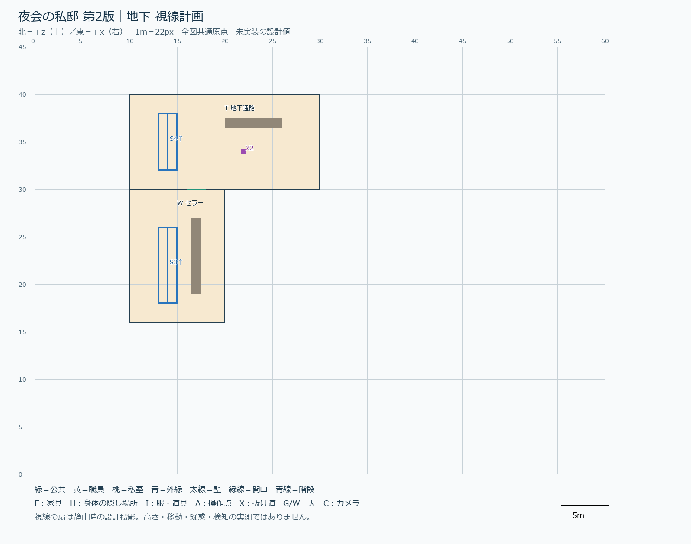
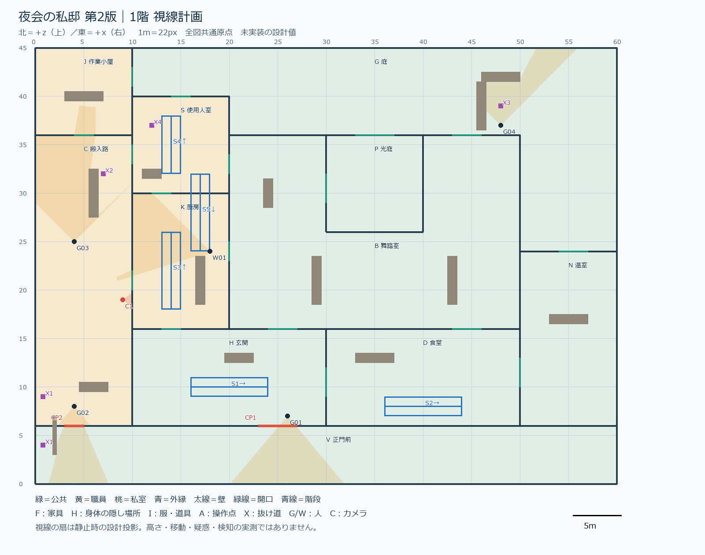
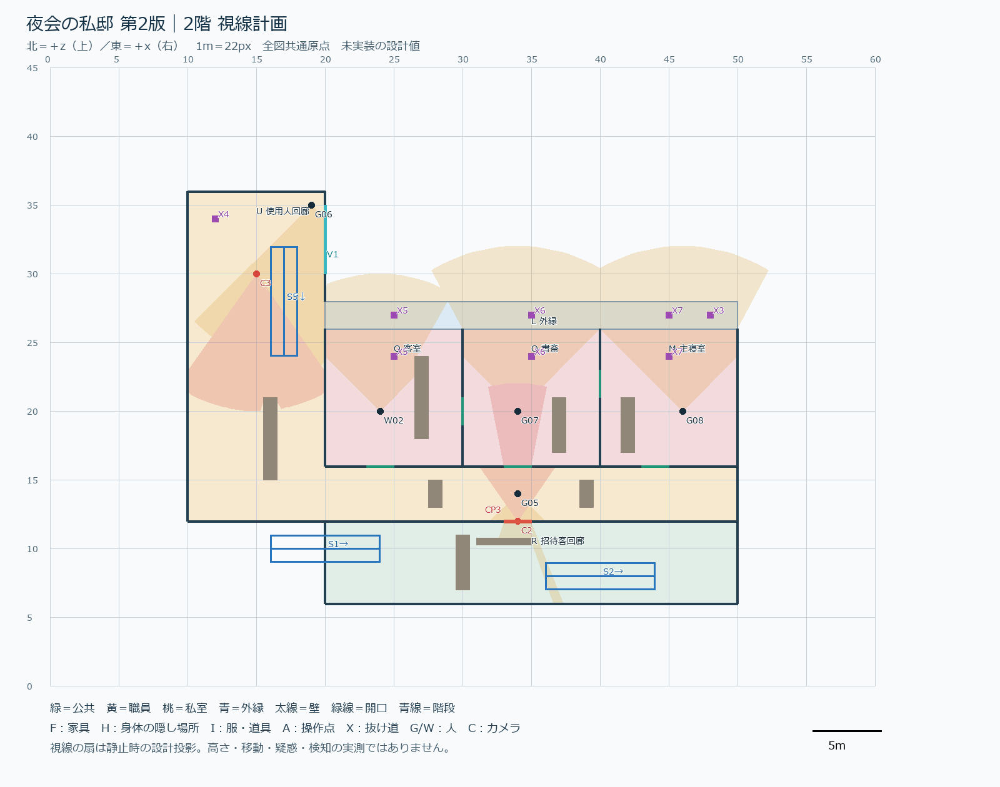

1. 平面図
縮尺：1稿目は1m=20px、2稿目は1m=22px（60×45m、北が上）。1稿目は座標原点が中央、2稿目は左下(0,0)で、座標値は直接比べられません。
2. 視線（2稿目のみ）
地下

1階

2階

1稿目には視線図なし。2稿目も設計上の投影で、NPCの動的視線の証明ではない。
3. 構造の数値
| 項目 | 1稿目（実測） | 2稿目（設計表の計算） |
|---|---|---|
| 敷地／階 | 地下・1階・2階・屋根裏の4層 | 60×45m、地下・1階・2階の3層（屋根裏を省略） |
| 区域 | 20 | 19 |
| 接続 | 37 | 38（開口26＋階段5＋抜け道7） |
| 行き止まり | 0 | 0 |
| 独立した輪 | 18 | 20 |
| 舞踏室Bの接続 | 6 | 6（庭Pを抱く凹形） |
| 人数 | 60（固定2） | 60（固定2）。全員の30分予定表あり（518区間） |
| 身体の隠し場所 | 59 | 15（全部実用品） |
| カメラ | — | 3台（録画はI5で消去可） |
| 実装・検証 | 実装済み。npm test 286件成功、90fps | 設計のみ。歩行・視線・性能はすべて未検証 |
4. チャンスと入り方
| チャンス | 1稿目 | 2稿目 |
|---|---|---|
| 全体 | 3件×3経路。9試行すべてが「給仕→護衛」の共通準備。経路の違いは最後の入り方だけ | 3件×3経路。初手が違う（職員／警備服／服なし）。給仕→護衛を共通にしない |
| シャンデリア | H→B / D→B / G→B。3経路とも成功・ゴースト可 | 西翼の胸像、9:30と23:00。スパナ→A1で6秒→A2から観察→落下。吊り具は保守回廊側。熟練10–14分／初見23–28分 |
| 書斎の書類 | R→Q→O、U→O は成功。庭→雨どい→L→窓は失敗 | 主人が14:30と27:00に窓へ。書類を窓辺へ移し外縁から突き落とし。時間窓を限定。熟練16–19分／初見28–30分 |
| 寝室の飲み物 | R→Q→O→M は成功。U→M と庭→雨どい→窓は失敗 | 21:30に寝室で飲む。毒を4秒で仕込み、窓か扉から退避。熟練23–25分／初見24–29分 |
| 発見 | 初回に全 dialogue.heard を自動発行（全発見） | 実会話を最後まで聞いたときだけ発見。開始時は全未発見。同じ情報を定期会話で再提示 |
| 難易度の狙い | 経路成功／失敗のみ記録（時間目標なし） | 初見20–30分、熟練8分以上（設計目標・未検証。設計上の最短は10–11分） |
5. 1稿目の問題点 → 2稿目の対応
| # | 1稿目で出た問題（証拠） | 2稿目の対応 | 状態 |
|---|---|---|---|
| 1 | 全チャンスで「給仕→護衛」が共通。入り方の差が小さい（実装報告） | 9経路の初手を変更。服は入場手段で、操作の必須条件にしない | 設計のみ |
| 2 | 全発見の自動付与（chances.ts afterAi が初回に全 heard を発行） | 自動付与を廃止。実際の会話を聞いたときのみ。壁越し・別階では発見しない | 未実装 |
| 3 | 庭の雨どいを客に見られて失敗（party-46が40.95秒） | 雨どいの足場と遮蔽を設計。X3下の人目がない時間帯を表化、途中解除で戻れる | 未検証 |
| 4 | Uで護衛隊長に見つかる（captainが43.27秒） | 隊長G05が護衛服の顔を知る。背後の安全待機点を設置。観察して別の道を選ぶ | 未検証 |
| 5 | 抜け道をE解除すると勝手に走る（chandelier #2） | 入力統合の修正を「新しく要る仕組み」に計上（原因未特定）。全7本×両方向×3中断点で検査 | 調査要 |
| 6 | 階段内に警備員（#3）、階段のずれ（#4）、通れなさそうな床（#5） | 階段5本・床穴・天井を点検表化。NPCは階段占有を全員30分で検査 | 未検証 |
| 7 | 浮いた機関銃（#6） | 第4段階で持つ・落とす・隠す・再開始の全状態を追跡。空中の銃0を合格条件に | 未検証 |
| 8 | 使えないロッカーが大量（#7、59個） | 15個に削減、すべて実用品、飾りロッカーなし。全収納に操作表示 | 設計済 |
| 9 | 動きが粗い（#1） | 第1段階で長押し移動を確認。途中姿勢は第4段階 | 未検証 |
| 10 | 飲み物：選んだシナリオにならない（drink #1） | 道具側の問題の可能性。ゲーム本体と切り分けて第3段階で確認。道具は変更しない | 範囲外含む |
| 11 | 形：同じ四角い部屋を並べた構成 | B が光庭Pを抱く凹形。表の環と裏の環、折り返す上階、外縁L | 設計済 |
| 12 | 失敗3経路は別手順を探索していない | 時間窓を逃したときの再機会と、次の時刻の表示（新任務システムは作らない） | 未実装 |
6. 2稿目に残る危うさ（設計書7.3より）
- 最短8分の下限が破られる可能性（無敵化や脱出ロックは採用しない）
- 時刻待ちで熟練者に空白が出る。90秒超の純粋な待機は組み直し
- 全視線・別階・雨どい中の姿勢は実コードで未検証
- S1/S2の階境界とX3の庇に実装上の切欠きが必要
- 60人が入口で詰まる可能性。毒の在庫接続が必要
- iPad第9世代の性能は未測定（実測まで達成と書かない）
工数見積り：第1〜4段階で合計13–21人日（概算、実績ではない）。元資料：party-design.md／party-implementation-report.md／party-v2-design.md